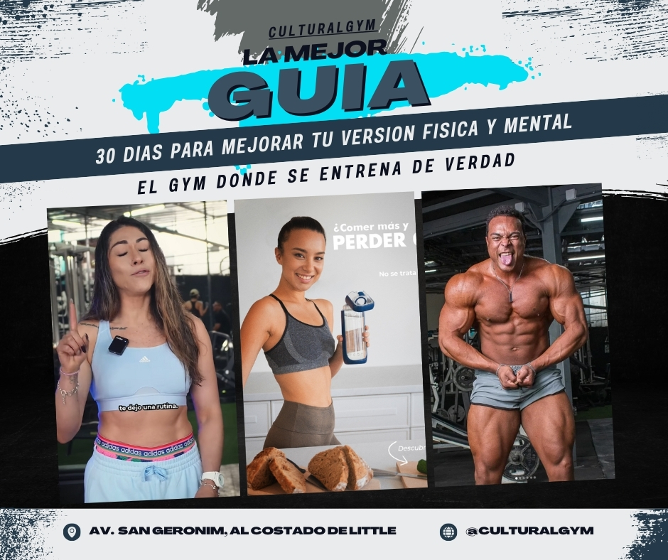

MÁS ALLÁ DE LOS CRUNCHES TRADICIONALES
¿Cansado de rutinas abdominales que no entregan resultados visibles? En CULTURALGYM, creemos en la eficiencia y la técnica. Este ebook te revela 5 ejercicios fundamentales, no solo para fortalecer tu core, sino para construir esos abdominales estéticamente impresionantes que siempre has deseado.
Olvídate de los mitos. Concéntrate en la ejecución perfecta y la consistencia. ¡Vamos a esculpir!
01. Elevaciones de Piernas Colgado (Hanging Leg Raises)
Un ejercicio rey para la parte inferior de los abdominales y los flexores de cadera. Requiere fuerza de agarre y control total del core.
Cómo ejecutarlo:
- Cuélgate de una barra con las manos separadas al ancho de los hombros, palmas hacia adelante.
- Mantén las piernas rectas (o rodillas flexionadas para una variante más fácil).
- Eleva las piernas lentamente hasta que formen un ángulo de 90 grados con tu torso.
- Controla el descenso, evitando el balanceo. Siente la contracción en tus abdominales inferiores.
Tips CULTURALGYM:
- Evita usar el impulso. El movimiento debe ser controlado.
- Si es muy difícil, comienza con elevaciones de rodillas al pecho.
- Mantén tu core apretado durante todo el ejercicio.
02. Crunch en Polea Alta (Cable Crunch)

Perfecto para añadir resistencia progresiva a tus crunches y trabajar la totalidad del recto abdominal con un rango de movimiento completo.
Cómo ejecutarlo:
- Arrodíllate frente a una máquina de polea alta con un agarre de cuerda.
- Sujeta la cuerda a cada lado de tu cabeza, manteniendo los codos hacia adentro.
- Contrae tus abdominales para llevar tu torso hacia tus rodillas, como si hicieras una reverencia.
- Mantén la tensión en los abdominales y regresa lentamente a la posición inicial.
Tips CULTURALGYM:
- Concéntrate en la contracción abdominal, no en tirar con los brazos.
- Exhala al bajar e inhala al subir.
- Experimenta con el peso para encontrar la resistencia adecuada para 8-15 repeticiones.
03. Plancha Abdominal (Plank) con Activación Total

Más que un ejercicio de resistencia, la plancha bien ejecutada es una contracción isométrica brutal para todo el core, incluyendo abdominales, oblicuos y espalda baja.
Cómo ejecutarlo:
- Apoya los antebrazos en el suelo, codos directamente debajo de los hombros.
- Extiende las piernas hacia atrás, apoyándote en las puntas de los pies.
- Forma una línea recta desde la cabeza hasta los talones. ¡No dejes caer la cadera ni la eleves demasiado!
- Contrae activamente los abdominales, glúteos y cuádriceps.
Tips CULTURALGYM:
- Imagina que intentas juntar tus codos con tus rodillas (sin moverlos) para una mayor activación.
- Respira de manera constante y controlada.
- Progresa aumentando el tiempo o añadiendo variaciones (ej. plancha lateral, plancha con elevación de brazo/pierna).
04. Giros Rusos (Russian Twists) Controlados

Un ejercicio dinámico excelente para fortalecer los oblicuos y mejorar la estabilidad rotacional del core.
Cómo ejecutarlo:
- Siéntate en el suelo con las rodillas flexionadas y los pies ligeramente elevados (o apoyados para más estabilidad).
- Inclina el torso hacia atrás unos 45 grados, manteniendo la espalda recta.
- Junta las manos frente a tu pecho (puedes sostener una pesa o balón medicinal para mayor intensidad).
- Gira el torso lentamente de un lado a otro, tocando (o casi tocando) el suelo con las manos/pesa a cada lado.
Tips CULTURALGYM:
- El movimiento debe originarse en el torso, no en los brazos. Mantén los brazos relativamente fijos.
- Controla la velocidad; no te apresures. La calidad supera la cantidad.
- Mantén los abdominales contraídos durante todo el ejercicio.
05. Abdominales Bicicleta (Bicycle Crunches) Precisos

Un clásico que, bien hecho, trabaja tanto el recto abdominal como los oblicuos de manera efectiva. La clave está en la conexión mente-músculo y el movimiento controlado.
Cómo ejecutarlo:
- Acuéstate boca arriba con las manos detrás de la cabeza (sin tirar del cuello).
- Levanta las rodillas a un ángulo de 90 grados y eleva ligeramente los hombros del suelo.
- Lleva tu codo derecho hacia tu rodilla izquierda mientras extiendes la pierna derecha.
- Alterna los lados en un movimiento de pedaleo, llevando el codo opuesto a la rodilla flexionada.
Tips CULTURALGYM:
- Concéntrate en rotar el torso para que el codo se acerque a la rodilla, no solo mover el codo.
- Mantén la parte baja de la espalda presionada contra el suelo.
- Realiza el movimiento de forma lenta y controlada para maximizar la tensión muscular.
TU VIAJE HACIA UN CORE IMPARABLE COMIENZA HOY
Estos cinco ejercicios son pilares fundamentales en CULTURALGYM para construir abdominales estéticos y funcionales. Recuerda: la consistencia, la forma perfecta y una nutrición adecuada son tus mayores aliados.
¿Listo para llevar tu entrenamiento al siguiente nivel? Visita CULTURALGYM y descubre nuestros planes personalizados, entrenadores expertos y una comunidad que te impulsará a superar tus límites.
Únete a CULTURALGYM Ahora